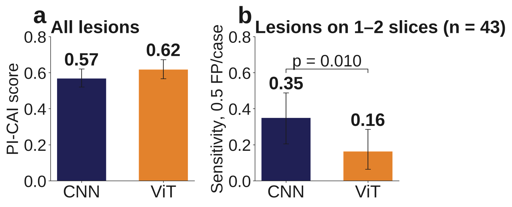
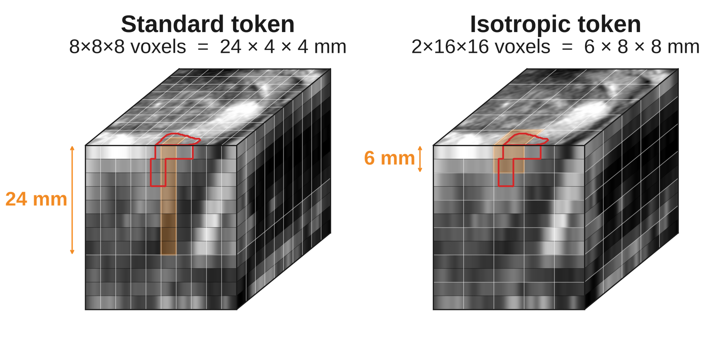
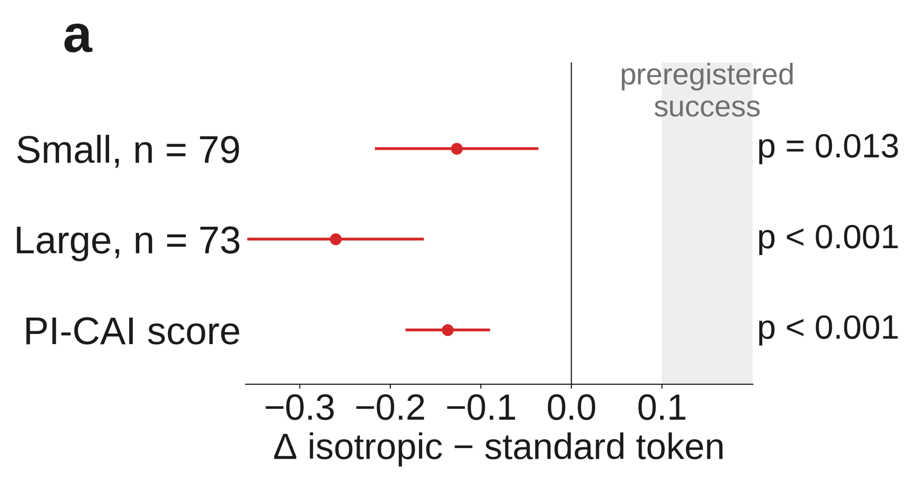
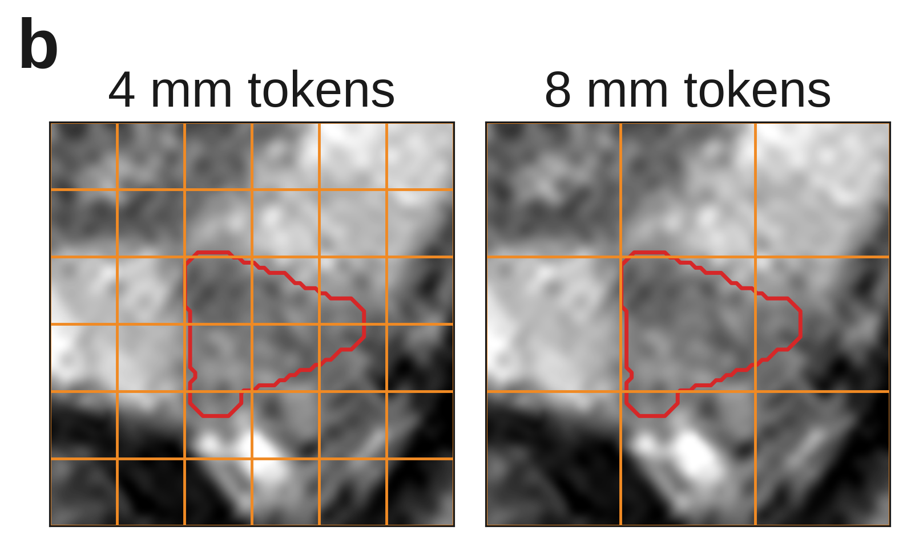

ViTs win overall but miss thin lesions
On PI-CAI [1], a pretrained 3D vision transformer (PrimusM) beats the nnU-Net ResEncL CNN on the challenge score, but finds less than half as many lesions that span only one or two 3 mm slices.

Pretraining: a large gain for ViTs only
MAE self-supervised pretraining barely moves the CNN but lifts the ViT by 15 points. Pretraining on brain or prostate MRI gives the same result.
| Init. | AUROC | AP | Score [95% CI] | Δ | |
|---|---|---|---|---|---|
| CNN | Scratch | 0.777 | 0.329 | 0.553 [0.51, 0.61] | ref. |
| MAE brain | 0.778 | 0.334 | 0.556 [0.51, 0.61] | +0.002 | |
| MAE prostate | 0.786 | 0.349 | 0.568 [0.52, 0.62] | +0.015 | |
| ViT | Scratch | 0.681 | 0.250 | 0.465 [0.42, 0.52] | ref. |
| MAE brain | 0.801 | 0.433 | 0.617 [0.57, 0.67] | +0.150* | |
| MAE prostate | 0.812 | 0.422 | 0.617 [0.57, 0.67] | +0.151* |
Score = (AUROC + AP) / 2. Δ: score vs. scratch, same architecture; paired bootstrap, *p < 0.001 (CNN: p ≥ 0.49).
Make the token isotropic in millimeters
Voxels are 3.0 × 0.5 × 0.5 mm, so a token that is cubic in voxels is tall and thin. We kept the number of tokens, parameters, data and training fixed and changed only the token shape. Both models were trained from scratch.

Isotropic tokens are worse
The isotropic model is worse on every measure, and more so for large lesions (−0.26) than for small ones (−0.13). Shorter tokens in z do not help; coarser tokens in-plane hurt.


Small lesions cannot be fixed after the model
- Detected
- Partial overlap
- Nearby (≤ 10 mm)
- Never seen
| Lever | Δ small-lesion sensitivity | 95% CI | |
|---|---|---|---|
| Candidate extraction | +0.013 | [0.00, 0.043] | |
| Ensemble of 3 CNNs | +0.032 | [−0.012, 0.086] |
Both stay below the preset +0.05 success threshold. Best CNN: ResEncL + MAE; small lesion: < 0.64 mL or ≤ 2 slices.
Take-home
- Pretrained 3D ViTs lead overall but miss lesions spanning 1–2 slices.
- Isotropic tokens do not fix it: in-plane detail is the bottleneck.
- Post hoc levers fail; the fix must come from training. Next: lesion-level training.
Setup
- Data
- PI-CAI: 1,201 development cases in 3-fold cross-validation (727 pooled validation cases). The 299-case test set was not used.
- Models
- PrimusM ViT vs. ResEncL CNN (nnU-Net), 500 epochs.
- SSL
- MAE on brain (114k) or prostate (5,210) MRI volumes.
- Metrics
- PI-CAI score = (AUROC + AP) / 2; lesion sensitivity at a fixed number of false positives per case. Small lesion: < 0.64 mL or ≤ 2 slices.
Authors
 Ronald Marca
Ronald MarcaPh.D. Program in Health Sciences and Engineering
Universidad de Valparaíso
Institute of Physics
Pontificia Universidad Católica de Chile
School of Biomedical Engineering
Universidad de Valparaíso
Department of Radiology
Pontificia Universidad Católica de Chile
iHEALTH: Millennium Institute for Intelligent Healthcare Engineering, Santiago, Chile. MEDING: Center for Interdisciplinary Biomedical and Engineering Research for Health, Chile.
Citation
Work in progress; please cite the presentation for now.
References
- Saha A, Bosma JS, Twilt JJ, et al. Artificial intelligence and radiologists in prostate cancer detection on MRI (PI-CAI): an international, paired, non-inferiority, confirmatory study. Lancet Oncol. 2024;25(7):879–887. doi:10.1016/S1470-2045(24)00220-1
- Wald T, Roy S, Isensee F, Ulrich C, Ziegler S, Trofimova D, Stock R, Baumgartner M, Köhler G, Maier-Hein K. Primus: enforcing attention usage for 3D medical image segmentation. Transactions on Machine Learning Research, 2026. OpenReview; arXiv:2503.01835
- Isensee F, Jaeger PF, Kohl SAA, Petersen J, Maier-Hein KH. nnU-Net: a self-configuring method for deep learning-based biomedical image segmentation. Nat Methods. 2021;18(2):203–211. doi:10.1038/s41592-020-01008-z
- He K, Chen X, Xie S, Li Y, Dollár P, Girshick R. Masked autoencoders are scalable vision learners. In: Proc. IEEE/CVF CVPR; 2022:15979–15988. doi:10.1109/CVPR52688.2022.01553
- Wald T, Ulrich C, Suprijadi J, Ziegler S, Nohel M, Peretzke R, Köhler G, Maier-Hein K. An OpenMind for 3D medical vision self-supervised learning. In: Proc. IEEE/CVF ICCV; 2025:23839–23879. doi:10.1109/ICCV51701.2025.02213
- Pooch EHP, Agrotis G, Cai L, Emberton M, Shah TT, Ahmed HU, Beets-Tan RGH, Benson S, Janssen T, Schoots IG. Semi-supervised learning in prostate MRI tumor detection approaches fully supervised performance on external validation. Eur Radiol. 2026;36(6):5011–5021. doi:10.1007/s00330-026-12324-x. Preprint: medRxiv 2025. Source of the expert lesion annotations used here.
Images from the PI-CAI public development set (Saha et al., 2024; CC BY-NC 4.0).